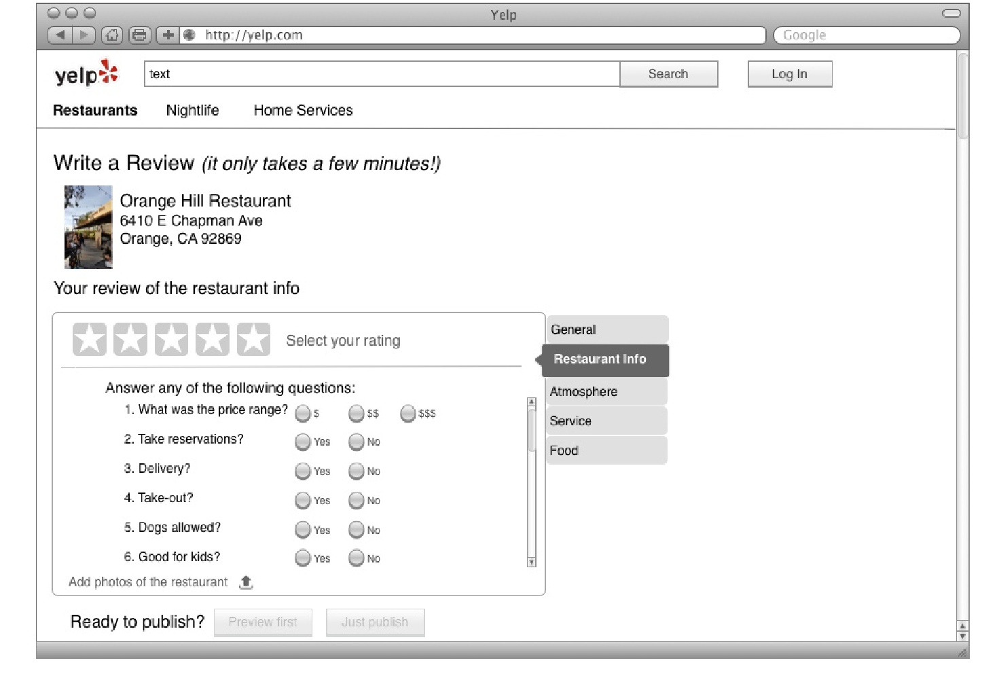
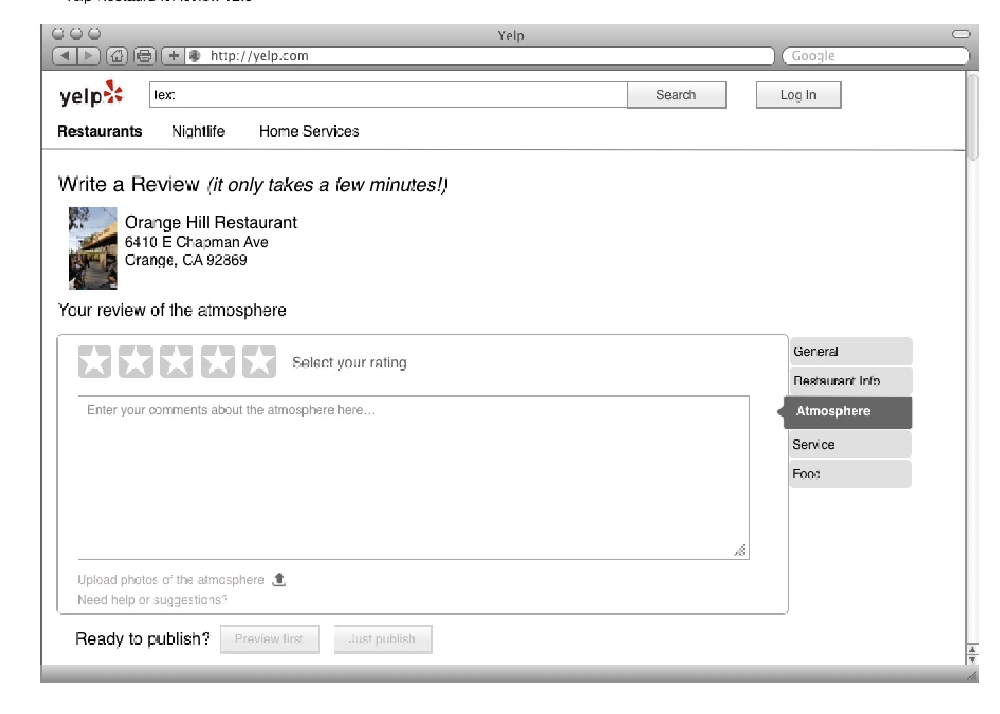
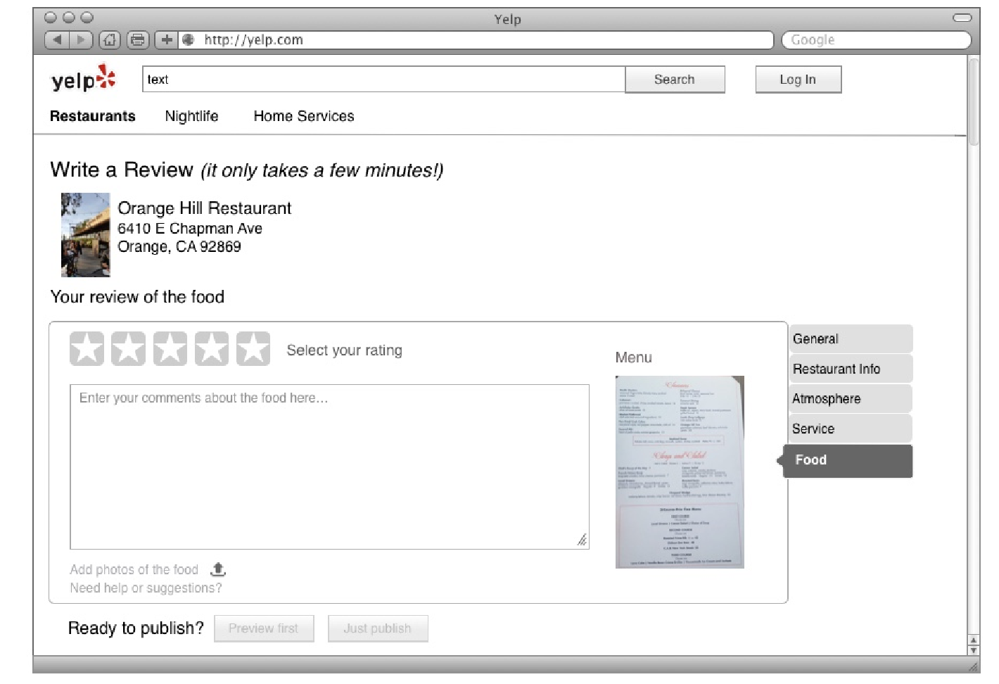

During my time at UCI I completed the following project dealing with Human Computer Interaction. The main goal of this project was to redesign some sort of app or service in order to learn and practice the process of user experience design and engineering. After learning different methods for user research, user interface design, evaluation and experimental design, my team was able to come up with potential design alternatives for the yelp.com website in order to enhance the user experience.
From redesigning the Yelp website I was able to accomplish the following:
After researching Yelp's pain points, the design mockups created focused on fixing two primary issues: enhancing Yelp's search results and simplfying the overall review process.
The following images are UI mockups of new features to add to the Yelp website in order to improve the review process.
The following images are UI mockups of new features to add to the Yelp website in order to make the process of writing reviews easier.
  